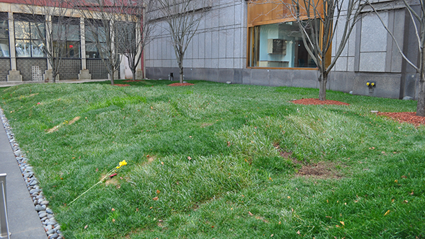

Some of the hundreds of skeletal remains found at the site, which have been photographed and indexed. (Photo by Nayantara Narayanan)
By Nayantara Narayanan
In the first week of October 2011, New York celebrated the 20th anniversary of the discovery of a burial ground where African slaves laid their dead to rest in the 18th century. The site at 290 Broadway is now home to a museum and a memorial “for all those who were lost, for all those who were stolen, for all those who were left behind, for all those who are not forgotten.”
The people found there had been forgotten for a long time. The burial ground was closed in 1794, and the land was divided into lots and sold. The subsequent growth of New York City obliterated all signs of the cemetery. The African Burial Ground dropped out of sight and out of mind until 1989 when, during the construction of the Federal Office Building by the General Services Administration, human remains were discovered. Controversy over the excavation of the remains ensued and finally, under great public pressure, the remains were transferred to Howard University to be studied and reinterred at the same site in 2003.
Seven reinterments at the memorial. (Photo by Nayantara Narayanan)
Excavations unearthed 424 graves and 419 skeletal remains, only a small percentage of the total: the graveyard is thought to have held an estimated 15,000 individuals, and appears to contain the only existing remains of continental Africans. Some historians believe the site was first used in 1679, when Trinity Church banned the burial of blacks, Jews and Catholics in its cemetery; but the earliest documentation for the graveyard doesn’t appear until 1712.
The archaeological and biological analyses—which entailed photography, radiology, osteology, genetics, craniometrics and dental forensics—have provided remarkable insight into the lives of the people who first built New York. Enslaved by the Dutch, and then by the British, these were the people who cut timber, erected walls and paved the streets. Several of the skeletons showed enlarged muscle attachment sites, which indicate hard manual labor. Bone pathologies have shown that most were malnourished or had been injured seriously—as a result of their daily toil or punishment. Infant mortality was high among the enslaved Africans and many children died young: about 150 of the remains belong to children and infants.
Some of the hundreds of skeletal remains found at the site, which have been photographed and indexed. (Photo by Nayantara Narayanan)
The burial ground has a strong connection to another significant episode of New York City’s history. Free blacks petitioned against medical students who were robbing graves to study the bodies, triggering the Doctors’ Riot of 1788. Some of the skeletal remains from the African burial ground show signs of autopsies or dissections like those conducted in a gross anatomy laboratory. These findings point to the possibility that the site was one of the contentious zones of the riot. The riots were the reason for closure of the burial ground in 1794.
The findings at the African Burial Ground have helped reshape popular perceptions of American history. They have overturned the widespread notion that slavery in America was largely a southern phenomenon. They also had enormous impact in highlighting the importance of consulting with descendant communities when dealing with archaeological findings. Finally, the existence of the burial ground tells a story of resistance—resistance of people whose families were torn apart but who continued to carry on their traditions, resistance of people who faced mortal danger but remained defiant in paying their last respects to the dead.
Entrance to the libation chamber. (Photo by Nayantara Narayanan)
Connecting to Device
Device is Ready